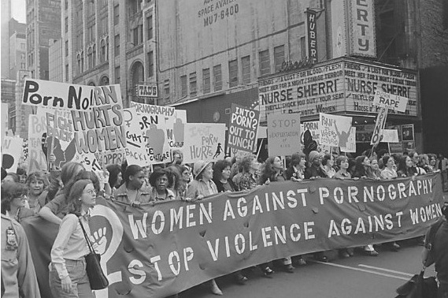
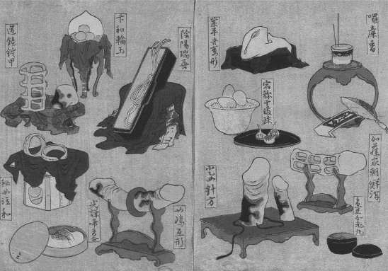

吉尔·约翰逊，《女同性恋国度》（1973年）
双重道德标准
在整个现代社会的历史中，女性的性存在一直处于科学与道德的特别审视之下。这也成为了女权主义斗争的焦点。第一次女权主义运动于19世纪末兴起，虽然运动的第一要务是争取女性的公民权和政治平等，但性存在也构成了批评当时性别关系的一个重要方面。当时人们以男女的生物属性为依据制定出双重的道德标准，认为男性天生好色淫乱，而女性则天生被动贞洁。女权主义者正是从这样的性别观点出发，提出女性的道德水准因此本质上要比男性的高。既然占领了道德高地，她们便发展出了一套针对男性性存在的批评，指出男性天生的贪婪性欲与性自由是女性性压迫的根源。19世纪，卖淫活动在整个欧美大肆蔓延，性病的发病率也随之增长，社会对此广为关注，当时的政治激进主义者也将矛头指向这一领域。一些女权主义者指出，男性之所以不愿意赋予女性选举权，“真正”的原因是为了维护男性对于女性的性剥削。
主要来自中上层阶级的女性激进主义者，在这一时期无数的社会运动中扮演了重要的角色。这些社会运动鼓吹更高程度的道德纯洁性以及“社会卫生”，融合了西方世界中政治左派与保守和宗教团体的主张。她们发起了反对卖淫的运动，要求终结“白奴制”，即无辜的、贫困的工人阶级女性被迫遭受不知廉耻的中产阶级男性性剥削的现象。她们主张对“堕落女性”实施“拯救”。按照道学家的观点，卖淫是一种恶行；同时，卖淫也被视作一个重要的公共健康问题。妓女被视为淋病、梅毒等男性性病的传播工具，这符合西方文化中将女性身体与疾病联系在一起的传统观念。正如莎士比亚笔下精神错乱的李尔王所说：
性病在近代也被塑造成女性文化形象的一部分，如法国人便将梅毒叫作“梅毒女士”。梅毒在15世纪晚期出现于欧洲，可能是由水手从美洲大陆返航时带回的，在欧洲大陆蔓延成灾。人们对梅毒产生了集体恐慌，将其描述为一种源自“外部”，特别是外国人身上的东西。这体现了性病在更广泛意义上的文化含义：它意味着本国的健康男性躯体为染病的女性和外国人的身体所污染。正如医书作者卢埃林—琼斯所指出的那样：
性传播疾病与外来侵略和叛国相联系。在第一次和第二次世界大战期间，妓女常常被视为“帮助敌方”的人，她们将疾病传播给爱国士兵。二战时的英国有一张广为流传的宣传画，画上是一个如骷髅的妓女，与希特勒和裕仁天皇勾肩搭背，宣传画的标题是《三者中最可怕的是性病》。在美国，一战期间有数以千计的涉嫌卖淫者被关进拘留营。马格努斯·赫希菲尔德所著的《世界大战中的性史》（1941年）一书中也记载，1915年德国军队曾在数个占领区发布法令，对明知自己患有性病，却仍与士兵发生性关系的女性加以制裁，最高可处以一年监禁。
由于担心性病会让男性失去军事战斗力，许多国家从19世纪开始对卖淫活动加以管制，以遏制性病的传播势头。当局并未对嫖客采取任何管束，以防他们将性病传播给妓女；但妓女却要接受强制的医学检查，如果被发现患有传染性性病，就会继而接受监禁或强制入院治疗。19世纪的欧洲民间流行一种迷信说法，认为与童贞的处女性交可以治愈性病。儿童卖淫的现象在欧洲和其他地方更加普遍，当然，女童的处女身份常常是伪造的，目的是为了将她反复卖出更高的价格。记者W.T.斯特德1885年曾在《帕摩街晚报》上发表了一系列报道，以极其形象的方式描述了伦敦妓院中被囚禁和售卖的女童的生活，该报道成为当时一条国际性的丑闻。这一系列的文章题为《摩登巴比伦的女童祭》，揭露了一个地下性交易的世界，中上层阶级的绅士们在“饱受色欲与兽行折磨的受害者的哭声中”寻欢作乐。这一系列的报道促使英国在1885年出台了刑法修正案令，将嫖娼列为非法行为，并将女孩的性行为最低合法年龄从13岁提高到16岁。
19世纪的女权主义反卖淫活动家与基督教团体一起，联合呼吁各国不要规范卖淫活动，而要从根本上将其取缔。他们提出，如果国家对卖淫进行规范，将其制度化，就意味着国家“充当了皮条客”。1875年，“英国和欧洲大陆关于取缔政府调控恶行同盟”创立，一项声势浩大的国际行动得以开展，该行动呼吁取缔卖淫活动。这一行动的议程上有一项迫切任务，即反对以卖淫活动为目的的跨境妇女贩卖。这也反映了当时由于外来移民方式增加而引发的大规模社会恐慌。1904年，第一个“遏制白奴贩卖国际协议”获得通过，此后大多数西方国家逐渐立法取缔妓院。
第一次女权主义的浪潮利用性存在的道德和生物模型，呼吁人们保护女性，使之免于遭受男性色欲带来的灾难性后果。他们将女性的角色定位为公共和个人道德的守卫者，这就再现了被当时社会普遍认同的女性形象，这一形象基于这样的理念：值得尊敬的女性，须婚前坚守贞操，婚后对丈夫忠贞；而淫乱的女性则因不道德、“堕落”的行为而在字面和比喻意义上均成了“荡妇”。
自由恋爱
不过，不是所有的女权主义者都认同这种关于女性性存在的二元观点。无数著名的女权主义思想家均参与到19世纪激进的性改革运动中来，这样的运动主张女性应当和男性一样享有更高程度的性自由。自由主义和无政府主义的思想家们纷纷谴责反淫秽和反同性恋法律，呼吁公开避孕信息和允许堕胎，号召人们在自由选择伴侣的前提下，与平等的伴侣“自由恋爱”。虽然大多数主张自由恋爱的思想家主张一夫一妻制，但他们反对建立在男性对女性经济和身体掠夺基础上的婚姻契约。这延续了玛丽·沃斯通克拉夫特等女权主义先驱对当时婚姻制度的攻击。自由恋爱的推崇者包括自由思想家、无政府主义者和社会主义女权主义者，比如美国的埃玛·戈德曼和莉莲·哈曼，以及日本的伊藤野枝，伊藤和她的男性情人于1923年被日本军警杀害。德国的“进步女性联盟团体”倡议女性罢婚，鼓吹女性和男性一样有权享受性的乐趣。成立于1893年的“英国私生子女合法化联合会”的初衷是捍卫非婚生子女的权利，之后也呼吁“人类最崇高的两种关系——爱与自由”应当相互结合。亚历山德拉·柯伦泰是苏联早期最著名的女性共产主义革命家，她于1919年创立了妇女部（布尔什维克党中央委员会妇女部），她曾提出家庭和国家一样，是一种资本主义的制度，最终会随着“地球上的天堂”——社会主义——的发展而消亡。她于1920年写下了这样的文字：“家庭对于其成员和整个国家来说，都正在失去存在的必要性。”在1920年所写的《共产主义与家庭》一文中，她有如下阐述：
她还认为，对女性的性剥削与资本主义制度下女性对于男性的经济依赖密不可分，因此，在光辉的共产主义未来，卖淫活动也将“自动消失”。至于性欲，她在1921年发表的《共产主义道德中的婚姻关系论》一文中写道，只要注意避免这种需求过滥，以免影响到工人的劳动生产率水平，那么它就“既不可耻也不罪恶，只是一种和饥饿、口渴一样，在每个健康的机体内都存在的自然需求”，不应当受到压制。
柯伦泰的观点在列宁那里受到了冷遇。资本主义社会的自由恋爱思想家也颇受主流社会妇女参政团体的敌视，因为这些组织担心鼓吹性解放会降低整个社会对更广范围内的女权主义运动的尊重（正如社会主义团体担心支持“自由恋爱”会使他们疏离工人阶级成员）。但是，激进的性革命者和主流的女权主义者还是取得了一定的一致看法，即女性有权拒绝男性“不合理的”性要求，有权拒绝怀孕太多次，有权成为自己身体的主人。他们倡议“自愿做母亲”。一些人认为解决这一问题的方法在于普及性教育、避孕知识与方法，而另一些人则要求男性要有更高的自我克制力和贞节意识。维多利亚时代的医生威廉·阿克顿不禁对此颇有牢骚，他于1871年写道：
在当时，堕胎是非法的，避孕方法也基本不可靠，死于难产和非法堕胎的女性人数居高不下，而且女性又在极大程度上依赖于男性。基于当时的这种社会环境，主张自由恋爱的女权主义者认为，性存在的解放是在更大范围内改变妇女地位的关键所在。
性解放
20世纪六七十年代的妇女运动，一般被称作“第二次女权主义浪潮”。这次浪潮将性存在的政治化作为中心议题，此时这一使命所面临的社会环境已截然不同。随着战后大批妇女开始就业，传统的两性关系得到了根本改变，第二次妇女运动的浪潮则产生于这样的社会背景之中。随着妇女开始从事有薪工作和获得政府福利形式的经济帮助，妇女取得了更大程度上的经济独立。在这一背景下，在更广大范围内出现了摒弃传统的潮流，从根本上改变了婚姻、家庭和性别的固有制度。总体看来，妇女，特别是中产阶级妇女对自己人生选择的掌控力大大增强。当然，不断上升的离婚率也导致了女性贫困率的增长，这种情况主要存在于单身母亲中间，在一些福利体系最薄弱的国家尤其如此。
与此同时，在控制生育领域也出现了一系列重大的社会变革。美国著名的避孕宣传家（也是优生学家）玛格丽特·桑格，于1921年创立了美国避孕联合会。她一直呼吁研发一种避孕药物，并于1950年与科学家们会面探讨其可能性。桑格还与凯瑟琳·麦考密克合作，“避孕片”的科学研发经费大部分都由麦考密克出资。到20世纪60年代，由卡尔·杰拉西研发的现代避孕药开始向西方广大民众出售。自此，人类历史上第一次出现了可靠的避孕方法，之后又出现了更多新的生育技术，比如IVF（试管婴儿），这意味着人类不仅可以避孕，而且可以通过人工而受孕。在这样的情形下，弗洛伊德的著名论断“生理结构注定人的命运”就过时了。不过，很多女权主义者最初对避孕药持怀疑和敌视态度。她们认为这是男性利用医药意欲控制女性身体的又一次图谋，其中一个重要原因就是女性刚开始大量服用这一新产品时所出现的副作用。
性交与繁殖后代这两者的分离，导致了女性性存在外部环境的根本改变，也给男性性存在带来了巨大的冲击。避孕手段的普及到底在多大程度上推进了20世纪六七十年代的性解放潮流？对这一问题的看法一直存在诸多争议，但它无疑是一个重要的前提。从荷兰、瑞典、丹麦等国开始，进而蔓延至整个欧洲大陆，性放纵的现象开始呈上升趋势，人们对于爱、性和恋爱关系也有了新的理解，这大大改变了性存在的整体概念。20世纪60年代出现了反主流文化的社会运动，其中最著名的要属美国的民权运动和以“要做爱不要作战”为口号的反战运动，以及法国、德国、荷兰、英国等国的反权威学生运动。这些运动均受到弗洛姆、赖希、马尔库塞等性解放理论家的重要影响。这些理论家们宣扬要把“自然的性欲”从资产阶级的压迫中解放出来，其后的大背景是对资本主义社会和独裁社会的反抗。
以1967年的“爱之夏” [17] 为标志，性放纵开始呈上升趋势。按照安东尼·吉登斯等社会学家的一贯解读，这一趋势是“性别中立”的，带来的是女性更大程度上的性自主。许多女权主义者一开始热烈赞成性解放，将其视作女性总体解放的关键所在。20世纪60年代末开始，许多国家相继涌现出大批启蒙组织，鼓励女性探索自己的身体和能量，以获得性快感，比如性教育家贝蒂·多德森从1973年起在美国组织的“性研讨班”。多德森在《让手淫获得自由》一书中，将女性手淫视为一种反抗对女性的性压迫的手段。她的性研讨班引导一群裸体女人，通过自慰振动棒完成一项集体的“高潮仪式”。多德森还进一步鼓吹“乱交”，反对一夫一妻式的占有、争风吃醋和性罪恶感——这也是同时代许多其他性革命者所热烈提倡的。比如，性学家亚历克斯·康福特写过一本针对主流社会公众的性学手册《性的欢乐》（1972年），该书出版后曾风靡全球。该书的续篇《更多性的欢乐》以非常正面的描写展现了一个圈子内部成员乱交的情形。当然，书中警告人们不要和亲密的朋友或陌生人乱交（该书后来的版本则警告人们彻底摒弃乱交行为，因为会有感染艾滋病病毒的危险）。
然而，性革命一点也不像自由恋爱派女权主义者曾经想象的那样，是“平等伴侣间充满满足感的爱与性”。性革命中的文化变革主要是由男性引导的，因而在很大程度上重塑了两性之间的不平等关系，同时也宣扬了一种新的色欲范式，女权主义者认为这种新的范式更有利于男性。一些著作，如1990年出版的希拉·杰弗里斯的《反高潮：女权主义的性革命观》中便提出：回顾这场性革命，与其说它给女性带来了更多的性自由，倒不如说是满足了男性对于女性身体开放性的幻想。这些著作的作者认为，性革命的话语方式让男性对女性性存在的控制合法化了，并且让女性无法对男性的性进犯“说不”。正如女权主义作家比阿特丽克斯·坎贝尔在1980年曾写下的那样：
性革命与某些性解放理论家们所想象的也大为不同。马尔库塞和赖希本希望通过快乐原则颠覆资本主义，而实际情况却大为不同：由于道德放松了对性的控制以及反淫秽法律和其他道德法律被纷纷取消，性的商品化趋势以前所未有的规模蔓延。各国内部和跨国的性交易数量急速攀升，在资本主义全球经济中扮演了重要角色。《性的欢乐》一书曾预言，性自由会让卖淫活动失去必要性，因为如今女性会心甘情愿免费满足男性的所有性需求了。但实际情况却是性交易的数量大幅度上升，色情出版物也是如此。因此，反对卖淫活动和色情出版物又很快回到了妇女运动的日程上来。
性高潮的政治
在更大的范围内，性的问题成为第二次女权主义浪潮的中心问题之一。一些理论家将对于女性的性压迫视为男权对于女性的压迫中最核心的部分。新的女性运动便采纳了“个人的即是政治的”这一口号，意在表达的观点是，女性的相当一部分“个人”生活，实际上都植根于女性作为一个整体在两性权力关系中所处的从属地位。一些女性启蒙组织树立了目标，要让女性进一步了解女性个体经验背后的制度基础，这些组织被视为女性采取集体政治行动的基础。“私生活”被赋予了政治意义，在这样的背景下，人们开始热烈地探讨和批判性存在这一话题。这成为了20世纪70年代以来女权主义理论和行动重要的中心组成部分。针对的具体问题包括享受性快感的权利，说“不”的权利，政治女同性恋主义，以及围绕避孕、堕胎、强奸、性虐待、色情出版物、卖淫和性骚扰等问题的辩论。从前，主流政治一向将这些问题列为“私人”领域内家庭和个体公民的问题。激进的女权主义者着手将性的话题引入政治领域，并且在总体上取得了成功。
然而，女权主义者对于性存在问题的探究并没有形成一个统一的观点。自从凯特·米利特的《性政治》（1970年）一书出版后，性问题的辩论中出现了数量繁多、观点迥异的派别。这些派别对性存在在两性权力关系中所扮演的角色持不同意见，导致了各派在对这一问题的分析上持有不同的政治立场和理论视角。一些富有影响力的社会主义女权主义者，包括齐拉·艾森斯坦、米谢勒·巴瑞特和朱丽叶·米切尔等人，和法国20世纪70年代的精神分析与政治团体，转向了马克思主义和精神分析学说，或将两者相结合，来研究性压迫及其与资本主义的关系。另一些人则反对精神分析学说，因其从根本上带有显而易见的厌女情结，他们也不同意马克思主义关于对女性的剥削会随着国家的消亡而消失这一论断，如杰曼·格里尔在《女太监》（1971年）一书中所说：“我们等不了那么久。”后来的几十年中又出现了其他的理论视角，如以后结构主义、后现代主义和后殖民主义视角来解读性别和性，这些理论视角如今正与精神分析学说以及唯物主义/后马克思主义争鸣。
在关于女性性存在的各种理论的争鸣中，性学领域是最重要的阵地之一。长久以来，性研究都将女性性存在看作是对男性本能的简单回应，这一点我们在第二章中已经讨论过。美国性学家金赛则将女性性存在作为一个独立的研究对象加以研究，这就为研究和解读男性和女性性存在开辟了新的路径。以后众多的性学家，如马斯特斯、约翰逊、费希尔、开普兰、雪菲和海蒂，以及弗蕾迪关于男性和女性性幻想的畅销小说，都是从这一视角出发进行进一步探寻的。女性性存在研究的焦点之一，是女性性高潮与女性生理结构之间关系的争议。马斯特斯和约翰逊在20世纪60年代曾对超过1万名男性和女性做过关于性高潮的实验观察，结果显示女性几乎具有用之不竭的性高潮能力，这一结论受到了方兴未艾的女性运动的热烈欢迎。马斯特斯和约翰逊曾称自己和女权主义“没有一丁点关系”，几年后，他们在1970年出版的作品《愉悦的结合》中，却将女性解放与性解放相提并论，反对双重道德标准，声称这样的双重标准更多地要求女性而不是男性压制自己的性欲。上述两位性学家重新提出了阴蒂在女性性快感中的重要性，而此前的不少性科学都强调阴道高潮更为“自然”（有些精神分析学派还声称阴道高潮体现了更高程度的性成熟）。举例来说，弗洛伊德理论在法国最为著名的推广者玛丽·波拿巴，就在20世纪50年代提出以手术手段使阴蒂更贴近阴道，来治愈性冷淡。她认为通过这一手段，可以改造“有缺陷的”女性生理构造，使其更符合弗洛伊德学说所谓的“成熟”性存在。性学家弗兰克·卡普利欧在1963年出版的《性能力充足的女人》一书中表达的观点，代表了当时大多数人的看法：
1970年安妮·寇伊德发表了颇具影响力的《阴道高潮之谜》一文，率先发起了女权主义对上述观点的批判。她提出：
寇伊德驳斥说，声称自己具有阴道高潮的女性，要么是在假装，要么是“不明所以”。因此，精神分析学派和性科学对于阴道高潮的一贯强调代表了男性对女性性存在的压迫，并成为了性的政治化中一个重要的议题。性高潮所涉及的性别政治，在女权主义性学家雪儿·海蒂的作品中占据了尤为重要的地位。她的一系列关于男性和女性性存在的研究书籍成为了全球畅销的读物，特别是《海蒂性学报告：女人篇》（1976年）和《海蒂性学报告：男人篇》（1981年）这两本书。海蒂在报告中这样描述女性性存在：
海蒂的报告基于对男性和女性的大规模性调查。这一调查的结果引起了热烈的争议。其中有一项针对女性的调查发现“这项研究中只有约30%的女性能够经常地从性交中获得高潮”，这一结果本身并不新鲜。过去的性科学一直坚持认为许多女性似乎对性交缺乏热情，金赛、马斯特斯、约翰逊和其他一些人在此之前也做过调查，均已发现大多数女性不能单凭性交获得高潮。不过，海蒂却以她的调查结果质疑了主流性学对性存在的观点：性存在等同于男女之间的性交，因此结论是，大多数女性都是“性冷淡”的。
海蒂的主要批评目标就是马斯特斯和约翰逊等人。虽然马斯特斯和约翰逊也曾重新认定了阴蒂高潮的价值，但他们仍将“正常”的性存在定位为从性交中获得高潮。他们提出在性交的过程中，由于“有力的阴茎插入”带来的“机械摩擦力”，阴蒂会自动地受到刺激。女权主义者阿利克斯·舒尔曼对上述说法的评价是：“我猜想，每当一个男人走一步路，他的阴茎也会自动地受到来自内裤的同样的‘刺激’吧。”针对那些不能从“自然”模式中获得性快感的男人和女人，马斯特斯和约翰逊率先创制了一些新的性治疗方案，旨在教会他们的研究对象通过“回归性的自然环境”来克服“功能障碍”，也就是训练他们通过性交来获得高潮。根据马斯特斯自己的估测，在《人类性缺乏》一书出版后的五年内，美国成立了3500家到5000家提供性问题治疗方案的诊所。马斯特斯和约翰逊给这些诊所中的性治疗方法带来了革命性的变革。他们为所谓“极度脆弱的、未婚的”男性提供替代的女性性伴侣，以治疗他们的男性“性缺乏”。但是，他们却没有为性缺乏的未婚女性提供替代的男性性伴侣，理由是这会与当时的“性价值观体系”水火不容。后来由于有一位身为人妻的女人自愿充当别人的替代的性伴侣，她丈夫由此愤怒地起诉了马斯特斯等人，他们之后就完全停止了使用替代的性伴侣的做法。
海蒂指出，大多数女性都完全拥有体验性高潮的能力，只不过这种高潮不是通过性交实现的。她声称，她调查中的大多数女性的确都可以通过刺激自己的身体获取性快感。海蒂还写道：“82%的女性声称自己会手淫，在这些人中，有95%的女性称只要她们自己愿意，随时可以轻易地、频繁地获得高潮。”因此，女性并没有马斯特斯和约翰逊所定义的女性“性交高潮缺乏”的问题，真正的问题在于社会对于性标准范式的定义方式。在海蒂看来：
海蒂宣称，女性发现自己处于男性的“性奴役”之中，需要满足对方的性快感，却忽略了自己的需求。她将性科学中的生物模型与男权对于女性的整体压迫等同起来，提出：
相比之下，海蒂借助性的社会模型提出了这样的观点：
以此为基础，海蒂改变了对女性缺乏性热情的解释。传统的解释是，这是女性性压抑的一种表现，她们需要从这种压抑中被“解放”出来。海蒂则将其解释为“拒绝参与一项她们没有以平等身份参与创制的制度”的政治行动。在针对男性性存在的报告中，她明确地将这一行动比作甘地针对英国对印度的统治发起的消极抵抗运动 [18] 。
海蒂以科学这一武器来批驳性科学所认定的“性真理”：她以自己的“科学”数据和方法的权威性，来论证她结论的合理性。不过，她的作品仍然受到了其他性学家的严厉攻击，如《金赛报告》的作者之一瓦戴尔·波默罗伊，就质疑海蒂的方法论带有“政治偏见”和“女性解放的偏见”。简·加洛普等一些女权主义者也批评她的“科学幻想”：海蒂对于她作品的科学性质的强调，让她不可避免地采取了和男性性学家一样的“男性立场”。
一些女权主义者发起呼吁，要求对异性之间的性关系作出变革。她们谴责这样的性关系是将男性的性需求放在首位，同时呼吁改善与男性的性生活，将阴蒂称作女性最好的新朋友。但另一些人却选择了另一条道路，即为“政治女同性恋主义”而战斗。20世纪70年代初，泰—格雷丝·阿特金森曾提出，女权主义是一个口号，而女同性恋主义才是一项行动。作家希拉·杰弗里斯等人便是这一主张的追随者。希拉是“利兹革命女权主义团体”的成员，她主张，只要男性和女性之间仍然存在不平等，女性就应当彻底断绝和男性之间的关系。希拉等人认为这样做可以促进女性之间的团结，当然这并不是要求女性之间发生性关系。利兹团体如是说：
政治女同性恋者宣称女同性恋主义是一个“政治选择”，而不是一个由生物属性决定的性身份，她们由此开始推广一种性存在的社会模型的政治版本。她们提出，性身份不仅仅由文化、社会和历史背景所定义，它还是一个自愿的政治选择问题。正如利兹团体所宣称的那样，“男性对于女性的根本压迫，正是通过性存在来维系的”，因而政治女同性恋主义是反抗男权过程中的一个关键的政治手段：
由此，希拉·杰弗里斯和阿德里安·里奇等作家将女同性恋主义视为对于男权的反抗，它并不要求女人之间发生肉体关系。里奇曾于1980年撰文《强制的异性恋关系与女同性恋的存在》，宣扬“女同性恋统一体”的概念。在这个统一体内，所有女性可以共享“女性认同的不同经验”，包括各种“共同反抗男性暴政”的体验，甚至肉体关系。里奇和杰弗里斯不同，她并不主张异性恋的女性变为女同性恋者。“女同性恋统一体”的概念后来成为一种寻求广大女性之间团结性的很有影响力的方法，让异性恋和同性恋的女性可以结成同盟。
与此相反，妇女运动阵营内的其他一些人则宣扬“女同性恋分离主义”，也就是不仅拒绝与和男人有关的女人生活，而且拒绝与和异性恋有关的女人生活。她们声称异性恋的女性通过和男性发生性关系而助纣为虐，难辞其咎。1971年，美国“激进女同性恋者”团体写下了女同性恋分离主义运动中最著名的口号“通过其他女性取得自我认同”。她们说：“我们的能量要流向我们的姐妹身上，而不是流回我们的压迫者身上。”这样的团体在西方国家雨后春笋般地涌现，如美国的“芝加哥女同性恋解放组织”、“女同性恋分离者团体”、“男性角色女同性恋”团体和“国际女同性恋集体威力”组织，还有昙花一现的法国的“激进女同性恋者阵线”等。然而，和更广大的女性运动相比它们只是少数派，并且遭到了其他女权主义者的敌视。女权主义者们排斥分离主义者“我们比你们圣洁”的态度，或者用琳恩·西格尔的话说，“和阴茎过不去的态度”。在法国，针对女同性恋分离主义的争议留下了一笔财富，即著名女性期刊《女权主义的问题》的创立。该期刊由包括科莱·卡皮唐·彼得、克里斯蒂娜·德尔菲、伊曼纽尔·德·莱塞普、尼可—克劳德·马修和莫尼克·普拉扎在内的编辑群体于1977年创立（后来又有科莱·基约曼和莫尼克·维蒂希等人加入），处于西蒙娜·德·波伏娃的指导之下。虽然中途离开期刊社的编辑们声称“在两性的战争中，异性恋的女权主义只是一种阶级合作”，但该期刊于1981年改版为《女权主义的全新问题》时，却登出社论，摒弃女同性恋分离主义，称其为“恐怖主义”和“极权主义”，“与女权主义的原则水火不容”，并强调“作为一个阶级，所有女性均遭到男性的压迫……女权主义就是反抗这种共同压迫的斗争”。
女权主义的性战争
围绕女同性恋分离主义的争议，也引起了“反色情出版物女性团体”（WAP）内部的分歧，该组织创立于1976年，创始人包括安德里亚·德沃金、雪儿·海蒂、格洛丽亚·斯泰纳姆和阿德里安·里奇等著名人物。关于色情出版物和卖淫活动的争论也引起了女权主义者内部重要而激烈的分化，这一分化在20世纪80年代日趋白热化。美国的“反对针对女性的暴力的妇女组织”、英国的“反色情出版物阵线”，还有新西兰的“反色情出版物女性团体”，将卖淫活动和色情出版物视为针对女性的总体压迫的核心部分。这完全不同于性革命对卖淫活动和色情出版物的描绘。性革命认为这些都是更大范围内的性解放的一部分。苏珊·布朗米勒、阿德里安·里奇、凯瑟琳·麦金农和苏珊·格里芬等女权主义者将色情出版物和卖淫活动定位为针对女性的暴力形式，并将性暴力视作男性整体统治地位的关键特征。
颇具争议的是，上述女权主义者对女性性剥削的批评，基于对男性性存在更广泛意义的分析基础之上，而这一分析认为暴力是全部男性性存在的基础。布朗米勒在其1975年出版的《违反我们的意志：男人、女人和强奸》一书中针对强奸的分析颇具影响力：

1979年纽约街头的反色情出版物女权主义示威活动。
布朗米勒宣称，强奸是一种“针对女性的政治犯罪”，或像凯特·米利特也曾提出过的那样，是一种男权的武器。雪儿·海蒂在她关于男性性存在的报告中也曾提出：
从这个角度出发，色情出版物被认为再次彰显了男性对女性的暴力，无论是色情出版物的制作过程还是它导致的后果。它教会男人以色情的眼光来看待对女性的性奴役和性虐待。安德里亚·德沃金还将这一分析拓展到了性交本身，她的这一理论很有名。她认为性主宰的情节在色情出版物中占据着核心地位，而这样的主宰也是男权社会中男性和女性性交方式的基本特征。她曾于1987年提到：
德沃金的观点与八年前利兹革命女权主义团体的话很相似，她们曾写道：
因此，这些女权主义者笔下展现的男性性存在是从根本上带有暴力性质的。德沃金将这种暴力倾向置于当下两性关系的历史背景下，凯瑟琳·麦金农批评性存在的社会建构理论掩盖了通过性虐待、强奸、嫖娼和色情出版物等更为普遍的形式对女性的压迫。昙花一现的女性组织“反对性行为女性同盟”，在20世纪80年代末采取这种分析视角得出了这样一种可能的结论：
然而，并非所有的女权主义者都同意这样的观点。艾伦·威利斯、盖尔·鲁宾、祖西·布莱特、琳恩·西格尔、卡罗尔·奎因和卡罗尔·万斯等批评家开始将自己标榜为“赞成性行为”的女权主义者，这与反色情出版物和反卖淫活动的圣战中弥漫的、女权主义者对性的明显否定态度完全相反。这些批评家攻击反色情出版物运动，认为其在对色情出版物进行分析时存在问题，比如没有区分暴力的、仇视女性的色情出版物和由女同性恋者制作的、女同性恋题材的色情出版物，看问题过于简单化。对于一些对性的“悲观”看法——女性在性交过程中的快感只是被男性洗脑的结果——她们也持拒斥态度。对于反色情出版物激进主义者试图采取法律手段禁止色情出版物，她们也表示反对。她们还谴责反色情出版物活动家与宗教右派结成的“令人不安”的政治联盟（因为这些宗教右派同时也在反对女性和同性恋者的权益）。
在美国，20世纪80年代初成立了“女权主义反检查制度行动力量”（FACT）等组织，它们反对德沃金和麦金农等人领导的、主张立法禁止色情出版物的活动。总部位于泰国的跨国女权主义组织“反对贩卖妇女国际联盟”，反对总部位于美国的“反对贩卖妇女联盟”（CATW）提出的、取缔一切形式的卖淫活动的主张。“反对贩卖妇女联盟”呼吁自愿卖淫的合法化，将自愿卖淫重新定义为一种“工作”形式，妇女可以有选择地从事这一工作，但该组织又反对一切形式的强迫卖淫和贩卖妇女活动。与此同时，在色情出版物领域工作或从事卖淫的女性也刚刚开始成立她们自己的利益团体和劳工协会，她们常常激烈反对女权主义者给她们的行为贴上从本质上侮辱女性的标签（虽然赫赫有名的色情片女星，在声名狼藉的色情片《深喉》中扮演琳达·洛夫莱斯的琳达·波曼，加入了麦金农和德沃金的阵营）。性工作者的组织采用了“性工作”这一标签，并主张她们的政治诉求应当聚焦于使性产业合法化和改善性工作者的工作条件，而不是从根本上取缔性交易。“赞成性行为”的女权主义还在世界各地，特别是在美国催生了一系列的商机，尤其是服务于女性的性玩具和音像制品的售卖。这样的产品有“神奇振动棒”、“宝贝乐园”情趣玩具、“在那里”出版社的系列读物以及女同性恋杂志《我们的背上》。

19世纪30年代的日本性玩具。
丽莎·达根和南·亨特将这种“赞成性行为”的女权主义者和反卖淫/色情出版物的女权主义者之间的斗争，称作女权主义的“性战争”，这样的战争导致了20世纪80年代之后女权主义集团内部深刻而永久性的分裂。造成这种分裂的原因之一是，两派之间的冲突不仅在于对待性交易所采取的不同的政治策略，而且在于从根本上对性存在，以及性存在与两性权力关系的内在联系的不同看法。在当时的时代背景下，女性运动被女同性恋者斥为只关心异性恋者的利益，被工人阶级的女性斥为只反映中产阶级的利益，被有色人种的女性斥为默认的白人运动。因此，从20世纪80年代开始出现了后结构主义、后殖民主义和后现代主义的性别理论，这些理论反对现存的简单的二元性别对立观点——男人是压迫者，女人是被动的受害者——认为这样的观点虽然在政治上具有煽动性，在理论上却毫无建树。
比如，美国非裔女权主义者贝尔·胡克斯就曾指出，诸如“强奸”之类的性暴力，在黑人女性的历史中占据了很大的比重，是奴隶制度的核心元素之一，对当代黑人女性情色化的形象定位仍然有着影响；用普遍的男性压迫理论来掩盖黑人女性境遇的不同，既不能解决问题，又缺乏准确性。“黑人女权主义者”这一笼统概念由此也受到了批评，因为它掩盖了内部成员文化和阶级的差异。比如美国非裔女权主义小说家艾丽斯·沃克就曾积极参与反对实施割礼的国际行动，这样的割礼如今主要在非洲大陆的各个国家、中东地区的一些地方和西方国家的移民中实行。激进的女权主义者，包括著名的美国女权主义者格洛丽亚·斯泰纳姆和罗宾·摩根，也和第三世界国家的女权主义者，如埃及的纳娃·厄尔·沙达威，联合呼吁将割礼这一行为重新定义为“女性生殖器官的切除”，将其视为针对女性的暴力形式之一。在多项国际运动的作用下，大赦国际和联合国宣布这一行为违反人权，许多西方国家和其他国家从20世纪90年代中期起也纷纷宣布其为非法。艾丽斯·沃克早期的作品曾批评白人女权主义者常常通过替黑人女性发声的方式排挤后者，她后来写出了反女性生殖器官切除的小说《拥有快乐的秘密》（1992年），献给“无罪的阴部”，还参与制作了同样题材的纪录片《勇士的标志》。这两部作品却被指责为带有文化帝国主义和新殖民主义色彩，批评者认为她名义上是为生活在她祖先生活过的非洲土地的女性发声，实则是在运用美国种族中心主义的视角审视非洲的文化行为。推而广之，西方女权主义者均受到类似的批评：她们将目光集中于第三世界国家的文化行为，却往往忽视了对女性的生殖器官进行的手术，如“激光阴道修复术”和“时尚激光阴道整形术”是现今很多西方国家发展最为迅猛的整形术。
虽然大多数女权主义者都提倡对性别身份和女性性存在采取一种社会而非生物的理解方式，但女权主义对于性存在的观点，仍然是将女性性存在作为问题来对待，而默认男性性存在没有问题。女权主义对于男性性存在的描述和性的生物模型大同小异，想当然地认为其天生是进攻性、支配性的，有时还带有暴力色彩。女权主义批评家如琳恩·西格尔，还有一些男性气质理论家——男性气质理论是20世纪90年代蓬勃发展的一个理论阵地——却提出，不能因此认为作为个体的男性也是以这样的方式来体验自己的性存在的。如西格尔所指出的那样：
马斯特斯和约翰逊的著作也曾强调指出了个体的异性恋男性所体验到的高度的性焦虑、不安全感和痛苦感，而这些感受也被女权主义研究家雪儿·海蒂、温迪·霍威和苏珊·法鲁迪等女权主义者对于男性气质和男性性存在的实证分析所证实。虽然大多数女权主义的性理论都倾向于将异性恋等同于男性统治，另一些女权主义作家却更强调男性和女性各自性体验的复杂性。她们没有不加批判地接受男性统治的理论，而是强调要更密切地观察如今男性气质的转变对于男性和女性之间的关系变化意味着什么。
女权主义通过对于性存在的分析，指出异性恋、家庭和各种亲密关系中都存在着男性对女性实施的压迫，女性也在其中进行重要的政治斗争。虽然这让不少激进的女权主义者提出废除家庭（和早期亚历山德拉·柯伦泰和威尔海姆·赖希的主张如出一辙）或抵制异性恋，但其对男女亲密关系中性别权力的强调，也导致在理论上忽视了国家调节在家庭和性存在中所起的作用。不过，矛盾的是，正是在性政治的背景下，激进女权主义者对国家的作为提出了最为频繁也是最为成功的质疑，尽管其质疑的方式常常是相互冲突的。女权主义者呼吁在强奸、性骚扰、色情出版物等领域进行立法，将这些问题从私生活的领域推入到公共领域，但她们同时又反对国家干预堕胎等行为，认为女性对此拥有“私人”决定权。正如我们所看到的，关于性存在的女权主义政治也是女权主义者阵营内部激烈冲突的源头。近来，有人士呼吁对男性和女性的性存在采取区别对待的分析方式，他们指出其他形式的身份，特别是阶级和种族身份，对于理解权力关系下性经验的形成方式具有重要意义。我们在下一章中就将看到，性别、阶级和种族在国家对性的调节中也同样起着至关重要的作用。